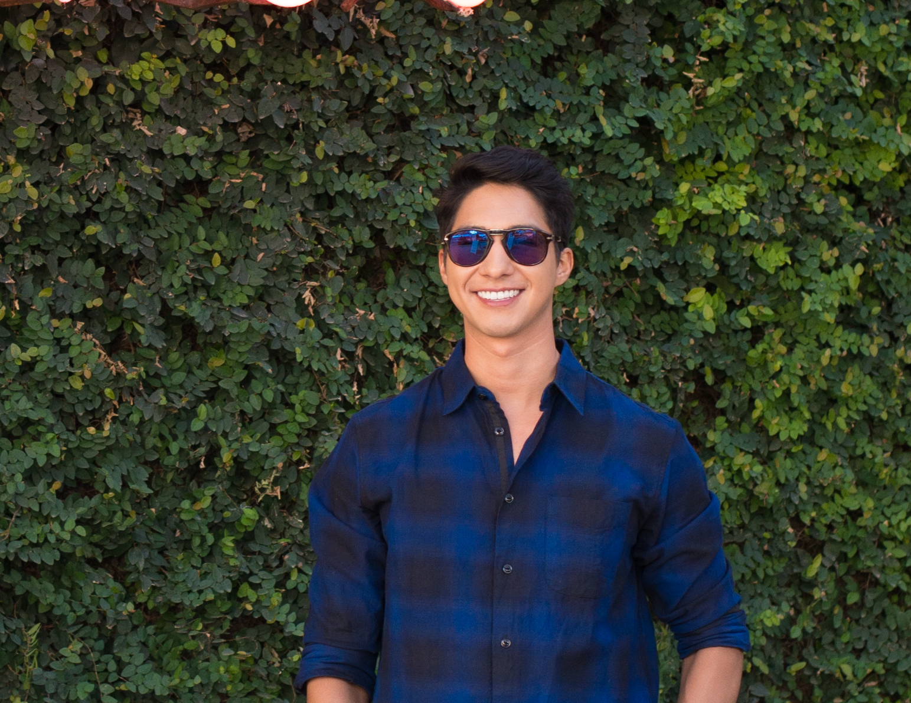

About Me

My name is Giovanni, I was born in Huntsville,Tx. I graduated from the University of Texas in 2016 with a degree in Government and Economics.
Oscar Wilde was once quoted saying “I find it harder and harder every day to live up to my blue china.” Although many find this quote ridiculous, I was able to relate to it. Though Wilde’s meaning was focused on achieving perfect beauty, mine is geared toward achieving unsurpassed results and overall, striving to be the principal example.